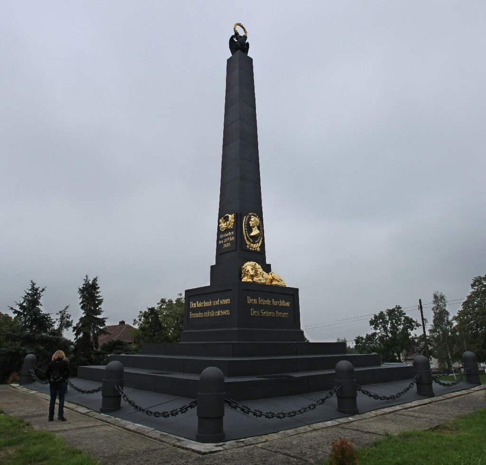
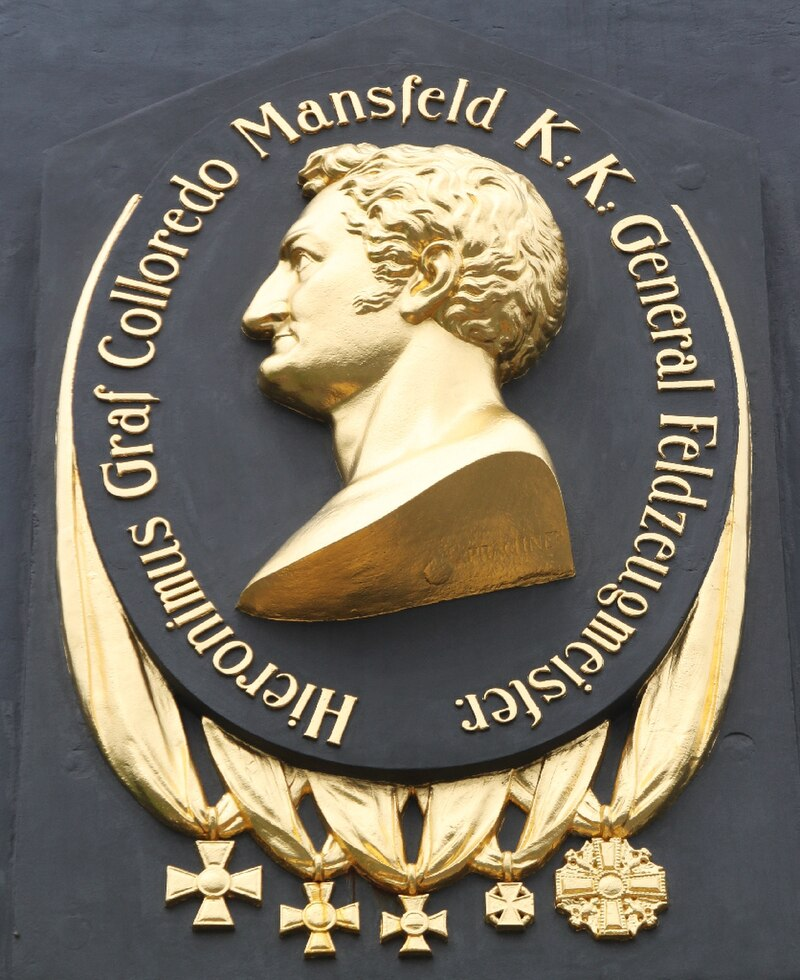
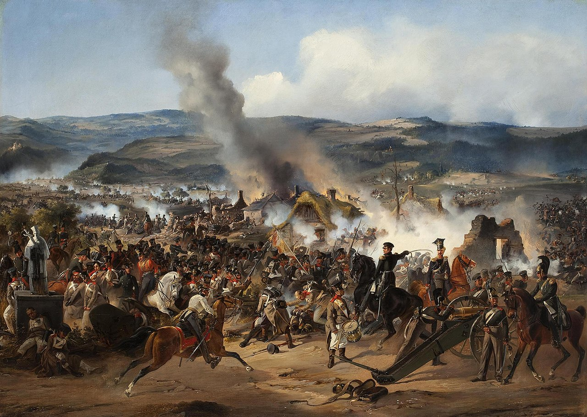
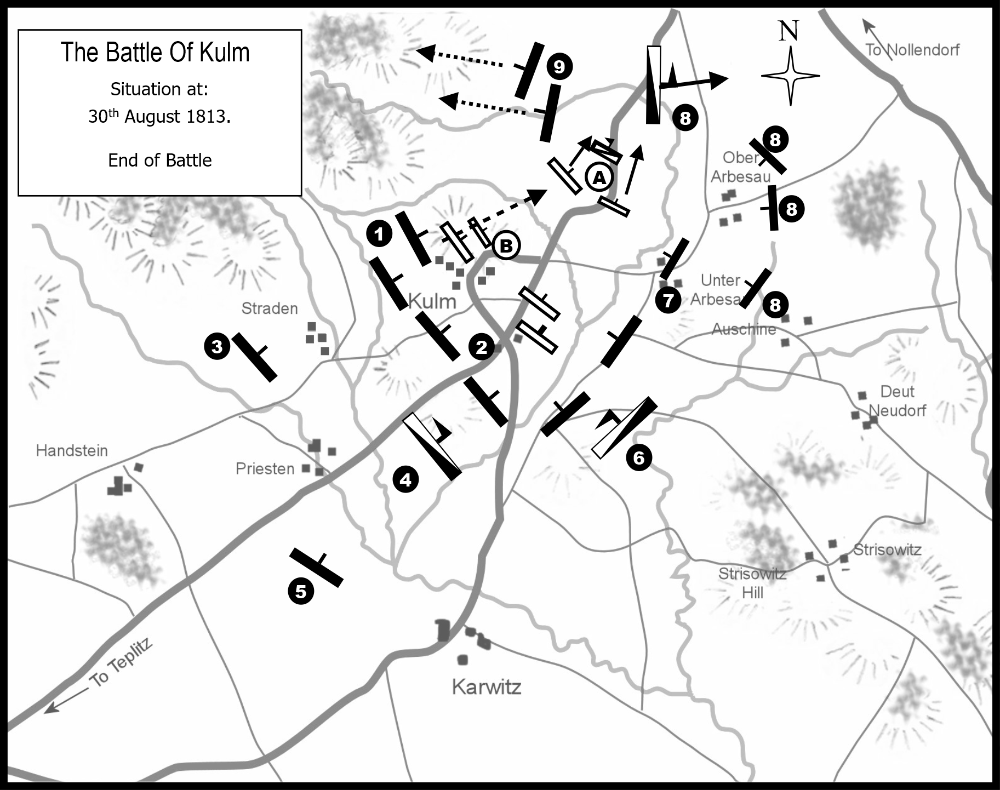
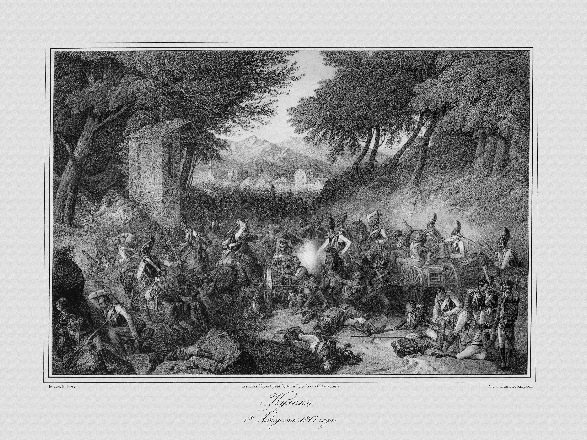
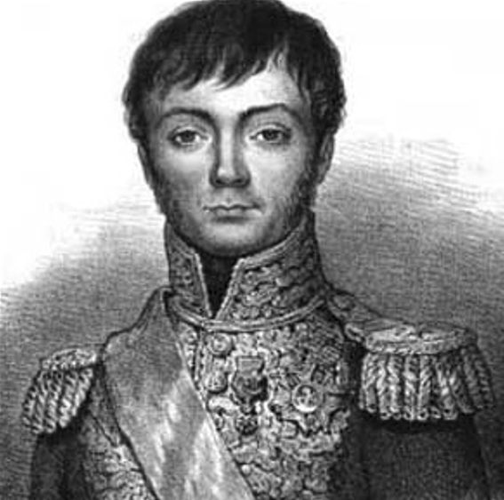
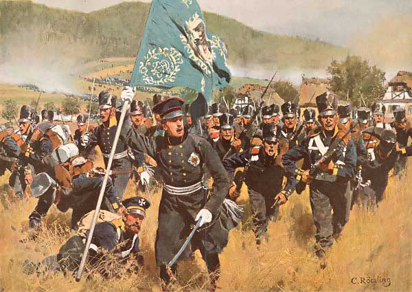
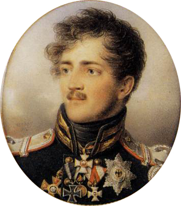

쿨름 전투 (6) - 구멍을 뚫다
게시: 2024-06-10T06:30:00+09:00
운명의 8월 30일 아침이 떠오르기 전에, 이미 전날 밤 방담은 휘하 사단장 및 참모들을 불러모아 어떻게 하면 좋을지 작전 회의를 한 바 있었습니다. 모두의 의견은 일치했습니다. 나폴레옹이 대군을 이끌고 곧 도착할 것이니, 당장 눈 앞의 적 방어선이 견고하더라도 어떻게든 이를 뚫어야 하며, 이를 해내지 못한다고 해도 적어도 이 쿨름에서 버텨야 한다는 것이었습니다. 나폴레옹은 드레스덴에 앓아 누워 있고 그들을 도우러 오는 프랑스군은 없다는 것을 모르던 사람들로서는 당연한 결정이었습니다. 좋은 일도 있었습니다. 30일 새벽에 쿨름에는 방담이 그토록 아쉬워하던 예비 포병대 등이 뒤늦게나마 마침내 도착했던 것입니다. 여기에는 12파운드 중포 6문과 2문의 곡사포, 그리고 8문의 8파운드 포가 있었고, 이로 인해 제1군단의 화력은 이제 84문의 야포로 대폭 늘었습니다. 하지만 나쁜 일도 있었습니다. 샛길을 통해 얼츠비어거 산맥을 넘어온 연합군이 스트라덴-프리스텐-카르비츠 마을의 러시아군 방어선에 속속 합류하고 있었습니다. 그래서 이미 30일 아침 무렵에는 거의 5만에 가까운 러시아군과 오스트리아군이 130문의 야포로 무장하고 이 방어선 뒤편에 모여 있었습니다. 더 나쁜 것은 방담의 후방인 놀렌도르프 방향에서 클라이스트의 프로이센 제2군단 약 2만5천이 104문의 야포를 끌고 오고 있다는 것이었습니다. 이제 규모가 매우 커진 이 방담 사냥전의 총지휘는 슈바르첸베르크로부터 지휘권을 위임받은 바클레이가 맡았는데, 바클레이의 작전은 나름 매우 치명적인 것이었습니다. 러시아군이 3개 마을 방어선에서 방담과 멱살을 쥐고 뒹구는 동안, 콜로레도(Hieronymus Karl von Colloredo)와 비앙키(Friedrich Freiherr von Bianchi)가 이끄는 오스트리아군이 프랑스군의 좌익, 그러니까 카르비츠 마을 남쪽의 높은 언덕들을 우회하여 프랑스군의 후면을 들이친다는 것이었습니다. 이는 언제 나타날지 모르는 클라이스트의 프로이센 제2군단을 기다리지 않고 프랑스군을 앞뒤로 포위할 정도로 연합군의 병력이 충분해졌기 때문에 가능한 것이었습니다.

(쿨름 전투 현장에는 러시아 전승비도 서있고 오스트리아 전승비도 따로 서있습니다. 두 전승비 모두 아래쪽에는 사자를 배치했습니다. 이 사진은 오스트리아 전승비입니다.)

(오스트리아 전승비에 붙어있는 콜로레도 장군의 옆모습 양각부조입니다. 코가 아주 크시네요.) 이런 사실을 모르던 방담은 30일 아침도 프랑스군답게 공격으로 시작했습니다. 그는 여전히 어제와 같이 러시아군의 좌익, 즉 스트라덴 마을이 연합군 방어선을 뚫을 적소라고 판단하고 그 쪽에 공격을 집중했습니다. 아마도 방담은 1809년 바그람 전투에서 나폴레옹이 보여준 화려한 전술, 즉 오스트리아군의 긴 방어선을 우익 끝부분부터 돌돌 말아올리며 일거에 패주시켰던 것을 재현하고자 했던 것 같습니다. 그렇게 김밥말듯 돌돌 말아올리리면 지대가 높은 스트라덴 마을부터 뚫는 것이 유리했으니까요. 방담의 공격은 매우 치열했습니다. 스트라덴 마을에는 어제 거의 박살이 날 정도로 힘든 싸움을 벌였던 러시아 부대들을 후방으로 돌리고 대신 새로 도착한 부대들을 배치했는데도, 프랑스군의 거센 공격에 정말 스트라덴 마을이 함락될 지경에 이르렀습니다. 그 공격이 어찌나 맹렬했는지, 바클레이는 결국 남쪽으로 우회하여 프랑스군 후방으로 침투하려던 오스트리아군 일부를 소환하여 그 지원에 나서야 할 정도였습니다.

(쿨름 전투를 묘사한 그림입니다. 러시아 화가 Alexander Kotzebue가 그린 것인데, 코체부는 1815년 프로이센 쾨니히스베르크(오늘날의 칼리닌그라드) 에서 태어난 프로이센 사람이지만 러시아 상트 페체르부르그에서 교육받고 주로 러시아에서 활약했습니다. 당연히 저기 보이는 '아군'은 러시아군입니다.) 이것뿐만 아니라, 연합군의 작전은 그다지 잘 돌아가지 못했습니다. 계획대로 남쪽 언덕을 우회하던 오스트리아군의 움직임도 프랑스군의 시야에 훤히 들어왔던 것입니다. 아무래도 북쪽에서 남쪽으로 경사진 지형에서, 언덕 뒤쪽이라고 해도 남쪽으로 우회한다면 상대적으로 높은 지형인 쿨름에 있는 프랑스군의 눈에서 벗어나기 어려웠던 것입니다. 방담도 즉각 거기에 대응하여 그쪽 방향으로 병력을 대기시켰고, 이들은 프랑스군 좌측 후방 마을인 운터 아베사우(Unter Arbesau)에서 오스트리아군을 막아섰습니다. 그런 상황이던 오전 11시 30분 경, 북동쪽에서 포성과 함께 맹렬한 총성이 들려오기 시작했습니다. 여태까지의 전투와는 전혀 무관했던 방향에서 들려온 이 난데없는 포성에 운터-아베사우를 공격하려던 콜레레도의 오스트리아군은 공격을 멈추고 상황을 파악하려 했습니다. 이 포성은 쿨름에서도 똑똑히 들려왔고, 방담의 프랑스군 제1군단 병사들은 모두 환호성을 올렸습니다. 자신들의 후방에서 들려온 저 포성이 뜻하는 바는 딱 하나였기 때문이었습니다. 바로 나폴레옹의 도착이라고 모두가 확신했습니다. 그러나 이 환호성은 오래 가지 못했습니다. 곧 그쪽 방향에서 거품 같은 땀으로 뒤범벅이 된 말을 탄 전령이 달려와, 후방 놀렌도르프 방향으로부터 프로이센군이 몰려오고 있다고 알려왔던 것입니다.

(8월 30일 오후, 쿨름 전투 거의 막바지의 상황도입니다. 검은색 막대기들이 연합군이고, 가운데 끼인 하얀색 막대기들이 프랑스군입니다.) 낙담도 한순간, 방담은 확실히 자신이 원수봉을 받을 만한 자격이 있다는 것을 행동으로 보여주었습니다. 그는 정말 빠르고도 정확하게, 이제 그가 해야할 일은 후방에서 몰려온다는 프로이센군을 뚫고 페터스발트 고갯길로 후퇴하는 것 뿐이라고 판단했습니다. 그는 즉각 전방 스트라덴-프리스텐 마을에서 싸우는 부대들에게 '전투 후퇴'를 명령하고, 가용한 모든 예비대를 동원하여 북동쪽의 프로이센군 포위망을 뚫도록 지시했습니다. 당장 치열한 전투를 벌이고 있는 남서쪽 러시아군보다는, 좁은 산길을 행군해오느라 아직 집결 및 전투 태세를 갖추지 못한 북동쪽의 프로이센군을 뚫는 것이 훨씬 유리하다는 것을 신속하게 판단하고 즉각 실행에 옮겼던 것입니다.
또 이 상황에서 제1군단 전체가 포병대까지 이끌고 온전히 빠져나가는 것은 사실상 불가능한 일이라고 보고, 스트라덴-프리스텐 마을 방면에 집중 배치되었던 포병대에게는 전방의 아군 부대가 빠져나올 수 있도록 마지막 순간까지 맹렬한 집중포격을 퍼부은 뒤, 대포의 점화구에 구리못을 박아 폐기한 뒤 남은 탄약을 폭파하고 각자 알아서 빠져나가도록 지시했습니다.

(이 그림은 러시아 화가 Vasiliy Fiodorovich Timm가 그린 쿨름 전투에서의 러시아 흉갑기병의 돌격입니다. 앞뒤로 포위된 상황에서도 프랑스군이 일부라도 탈출할 수 있었던 것은 프랑스 포병들의 자신들을 희생시켜가며 남서쪽의 러시아군을 막아낸 덕분이었습니다. 그러나 그 대가는 혹독했고, 이 그림 속에 나오는 것처럼 프랑스군은 84문의 대포 중 81문을 상실했습니다.) 방담의 이런 신속 과감한 결정은 빛을 발했습니다. 포병대가 자살에 가까운 희생을 각오하고 남서쪽 러시아군을 막아내는 동안, 2만이 훨씬 넘는 제1군단 병력이 일제히 북동쪽 프로이센군을 향해 공격에 나섰습니다. 어찌나 급하게 또 어찌나 밀집되어 공격에 나섰는지, 북쪽 얼츠비어거 산맥쪽의 프랑스군 측면 부대는 뒤쪽에서 자꾸 밀려오는 아군의 압력에 대오가 무너져 측면으로 삐져나와야 했고, 이렇게 흩어진 병사들은 그냥 그대로 산맥의 오솔길을 찾아 도망칠 정도였습니다. 그러나 여전히 대부분의 부대는 대오를 유지한 채 총검을 꼬나쥐고 프로이센군을 밀어 붙였습니다. 이런 밀집 부대를 포병대가 두들겨 팼다면 끔찍한 피해가 발생했을 것입니다. 그러나 프로이센 포병대들이 아직 현장에 도착하지 못하거나 자리를 잡지 못한 상태였으므로 급히 방열을 마친 소수의 포병대가 쏘아대는 포격은 큰 위력을 발휘하지 못했고, 그나마 코르비노 장군이 지휘하는 기병대의 재빠른 돌격으로 곧 제압되었습니다.

('호라티우스 삼형제'로 알려진 코르비노 삼형제 중의 둘째이자 쿨름 전투에서 맹활약한 코르비노 장군입니다. 지난 번에 보여드린 초상화보다는 좀 못 생기게 나왔네요. 코르비노 장군은 그래서 이 포위망에서 무사히 빠져나올 수 있었을까요? 다행히 빠져나올 수 있었으나, 막판에 날아온 머스켓 총탄에 머리를 맞아 심한 부상을 입었다고 합니다. 하지만 바로 다음 해 초에 다시 군무에 복귀하였다고 하니, 심각한 뇌손상을 입었다던가 하는 것은 아니었나 봅니다. 그런데 그렇게 복귀한지 바로 몇 달 뒤인 1814년 3월, 이번에는 폭발탄에 맞아 다시 머리를 다쳤다고 합니다! 하지만 역시 다시 회복했고, 결국 나폴레옹의 백일천하에도 가담했습니다.) 이렇게 결사적으로 돌격해오는 프랑스군 앞에서 결국 프로이센 국민방위군들은 버티지 못하고 무너져 내렸습니다. 무질서하게 후퇴하는 프로이센 병사들을 가로막은 사람이 있었는데, 바로 국왕 프리드리히 벨헬름의 사촌인 아우구스트(Friedrich Wilhelm Heinrich August) 대공이었습니다. 그는 말에서 내려, 막 무너지고 있던 슐레지엔 제2연대 제2대대의 군기를 손에 쥐고 이렇게 외쳤다고 전해집니다. "진정한 프로이센의 심장을 가진 자라면, 나를 따르라!" 그러나 실전은 만화 같은 것이 아니라서, 그렇게 외친 아우구스트 대공을 따르는 병사들은 거의 없었고 아우구스트 대공도 곧 걸음아 날 살려라 도망쳐야 했습니다. 살 길을 찾는 것은 프랑스군뿐만이 아니라 프로이센군도 마찬가지라서, 서로 도망치느라 바쁘던 병사들은 앞을 막는 자가 있다면 적군이건 아군의 높으신 대공이건 가리지 않고 마구 찔러댔기 때문이었습니다.

(이 그림은 쿨름 전투에서 진격하는 프로이센군을 그린 것인데, 저 깃발을 든 장교가 설마 아우구스트 대공일까요?)

(1813년 당시 34세의 한창 나이셨던 아우구스트 대공은 이렇게 생기셨습니다. 18세의 나이로 이미 대위 계급이셨고, 1806년 아우어슈테트 전투에서 중령 계급으로 포로가 되었던 이 양반은 사실 군사적인 업적은 거의 없습니다. 그러나 프로이센 왕국 내에서 손꼽히는 땅부자셨다고 하는데, 정식 결혼은 하지 않았습니다. 이 양반이 결혼을 하지 않은 이유에 대해서는 딱히 나오는 것이 없는데, 아마도 사랑 때문이 아니었나 싶습니다. 이 양반은 귀족이 아닌 여러 여성과 사실혼 관계에 있었는데, 그렇다고 막 난잡한 생활을 한 것이 아니라 한 여성과 오래 동거하다 헤어지고 난 뒤에 다른 여성과 사귀는 식이었고, 그 여성들은 결국 남작부인으로 귀족 작위를 받았습니다. 이 양반은 두 번째 여인이 사망한 이후, 50대의 나이에 법률적으로 인정되지 않는 결혼식을 올린 폴란드 귀족 여성과의 사이에서 낳은 딸까지 합해 3명의 여성에게서 총 12명의 아이를 두었습니다. 하지만 이들은 모두 정식으로 인정되지 않는 결혼으로 낳은 아이들이라서, 이 양반이 63세의 비교적 이른 나이에 급사하자 그 막대한 부동산은 모두 프로이센 왕실로 귀속되었습니다. 그가 늙으막에 낳은 막내딸은 이 양반의 유태인 재단사가 키웠다고 하네요.)
하지만 역시나 앞뒤가 적군에게 포위된 산맥 밑자락 지형에서 빠져나가는 것은 쉽지 않은 일이었습니다. 30일 오전, 약 2만8천 정도가 남아 있던 제1군단 병력 중 대략 1만이 어설프게나마 대오를 이룬 채 프로이센군의 포위망을 빠져나갔습니다. 약 8천이 이 날의 전투로 죽거나 부상을 당했고, 7천이 포로로 잡혔습니다. 그 외에 수천 명이 각자 알아서 산속 오솔길로 탈출했는데, 이들 상당수는 원대로 복귀하지 않고 무기를 버린 채 고향으로 돌아가 버렸습니다. 연합군도 이틀 간의 전투에서 총 1만2천 정도의 사상자와 실종자들을 냈지만, 아무튼 원래 3만4천 규모였던 프랑스 제1군단을 완전히 궤멸시켰으니 쿨름 전투는 정말 빛나는 승리라고 할 수 있었습니다. 이 처참한 패전의 책임자인 방담의 운명은 어땠을까요? 다음 편에서는 이 악명 높았던 빌런인 방담이 어떻게 되었는지 후일담이 이어집니다. Source : The Life of Napoleon Bonaparte, by William Milligan Sloane Napoleon and the Struggle for Germany, by Leggiere, Michael V With Napoleon's Guns by Colonel Jean-Nicolas-Auguste Noël https://www.pinterest.co.uk/pin/143059725653536439/ https://napoleon-monuments.eu/Napoleon1er/Vandamme.htm https://alchetron.com/Battle-of-Kulm https://www.frenchempire.net/biographies/corbineau2/ https://commons.wikimedia.org/wiki/Battle_of_Kulm https://en.wikipedia.org/wiki/Prince_Augustus_of_Prussia